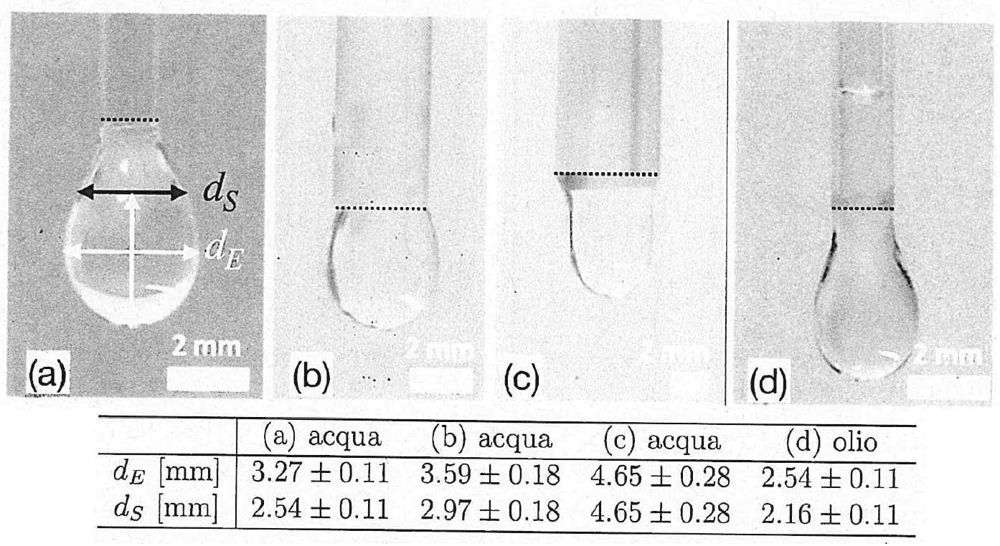

bosone5 gen 2023, 11:06
Grazie Pigkappa!bosone4 gen 2023, 18:18
Assumendo di conoscere con grande precisione il valore della tensione superficiale tra l'acqua e l'aria \(\sigma_{acqua}=72 .10^{-3} N/m\), si vuole misurare la tensione superficiale di un olio vegetale con l'aria attraverso il metodo della goccia pendente da un piccolo tubo. A tal fine vengono effettuate tre prove (A), (B) e (C) con l'acqua di gocce con differenti diametri del tubo che si trovano in condizione di equilibrio meccanico molto vicino alla situazione di distacco dal tubo, mentre la prova (D) riguarda un olio di cui la tensione superficiale con l'aria è ignota allo sperimentatore. Per favorire le estrazioni delle misure da associare, vengono riportate in tabella le lunghezze di due segmenti che indicano rispettivamente il massimo diametro equatoriale della goccia sferica \((d_E)\) e il diametro della goccia misurato su un piano parallelo al piano equatoriale e posizionato ad una distanza \(d_E\) dal piano equatoriale \((d_S)\) nell'ordine (A)acqua (B)acqua (C)acqua (D) olio\(d_E \text{(mm)}\): \(\text{A}: 3,27 \pm 0,11\); \(\text{B}: 3,59 \pm 0,18\); \(\text{C}: 4,65 \pm 0,28\); \(\text{D}: 2,54 \pm 0,11\)
\(d_S \text{(mm)}\): \(\text{A}: 2,54 \pm 0,11\); \(\text{B}: 2,97 \pm 0,18\); \(\text{C}: 4,65 \pm 0,28\); \(\text{D}: 2,16 \pm 0,11\)
Le densità dell'acqua e dell'olio a temperatura ambiente sono rispettivamente \(\rho_{acqua}= 998 kg/m^3\) e \(\rho_{olio}= 930 kg/m^3\). La densità dell'aria vale \(1,2kg/m^3\) e l'accelerazione di gravità vale \(9,81 m/s^2\). La forza di gravità e la tensione superficiale sono gli unici elementi che contribuiscono a determinare l'equilibrio e la forma delle gocce.
Determinare il valore della tensione superficiale dell'olio rispetto all'aria fornendo anche una misura dell'incertezza della misura effettuata.
